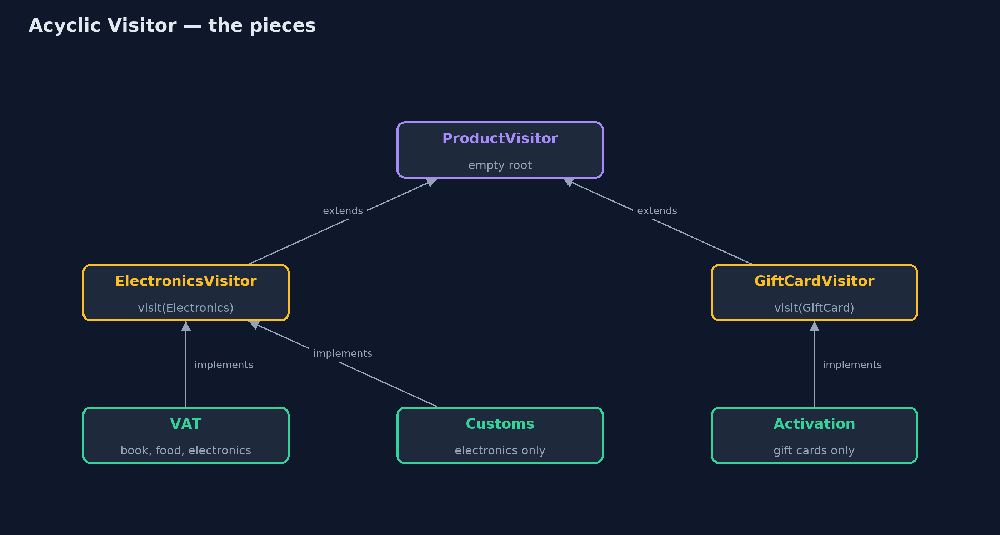
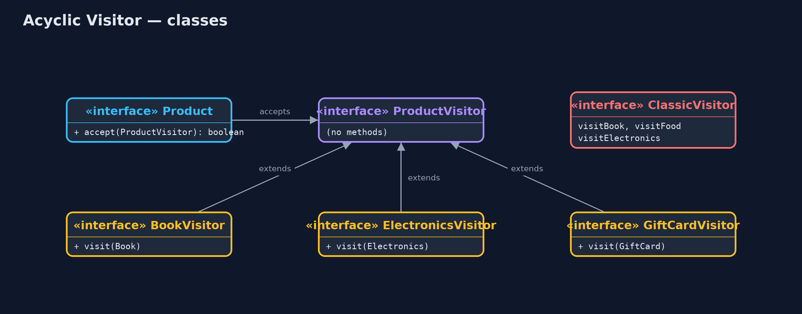
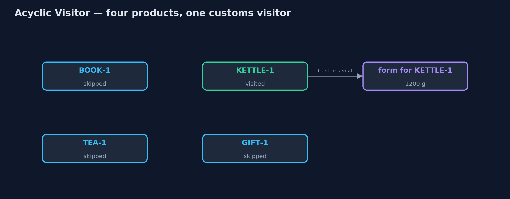
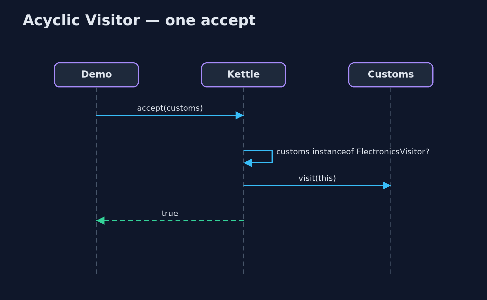

Acyclic Visitor Pattern
src/main/java/com/jk/explore/acyclicvisitor/
├── AcyclicVisitorDemo.java The five acts: the classic visitor, the acyclic visitor, a new product type, a visitor for one type, and the bill
├── ClassicVisitor.java Without the pattern: the classic visitor names every product type, so every visitor must handle every type
├── ProductVisitor.java The pattern's root: an empty interface every visitor wears
├── Products.java The catalogue's product types
└── Visitors.java The shop's visitorsGive every product type its own tiny visitor interface, so each visitor handles only the types it cares about and a new type changes nothing that already exists.
Acyclic Visitor is a variation of the Visitor pattern. A visitor is an operation, such as working out VAT, kept outside the classes it works on. In the classic Visitor, one visitor interface has a method for every type, so every visitor must handle every type, and adding a type means changing the interface and every visitor. The types depend on the visitor, and the visitor depends on every type: a dependency cycle.
The acyclic version breaks the cycle. The root visitor interface is empty. Each type gets its own one-method visitor interface, and each visitor implements only the ones it cares about. A new type adds a new small interface, and nothing that already exists has to change.
The idea in everyday terms
Think of a hotel where staff wear a small badge for each language they speak. A guest who speaks Italian looks for the Italian badge. Nobody is expected to speak every language, and when the hotel starts welcoming Japanese guests, it hands out a new badge to the staff who learn Japanese. Nobody else has to change a thing.
The scenario
The online store's catalogue has books, food and electronics. Operations such as VAT and customs forms were written as classic visitors, each with a method for every product type. The customs visitor had two empty methods just to satisfy the interface. Then the shop started selling gift cards.
Run
./gradlew runThe demo tells the story in 5 acts, each printing exact numbers that the tests check:
| Act | What it shows |
|---|---|
| 1. The classic visitor | ClassicVisitor has 3 methods, one per type; VAT is £6.00; customs has 2 empty methods; a gift card cannot be accepted. |
| 2. The acyclic visitor | One tiny visitor interface per type; the VAT visitor implements three of them and still works out £6.00. |
| 3. A new product type | Gift cards arrive with their own GiftCardVisitor; the VAT visitor skips GIFT-1 and the new activation visitor handles it. |
| 4. A visitor for one type | The customs visitor wears only ElectronicsVisitor and handles 1 of 4 products: a form for the 1200 g kettle. |
| 5. The bill | A VAT visitor that forgot FoodVisitor still compiles; tea is silently skipped at run time. One extra interface per type. |
Test
./gradlew test11 tests in AcyclicVisitorTest, DemoRunsTest. Every number the demo prints is asserted, and nothing depends on the clock, so every run gives the same result.
Technologies and versions
| Technology | Version | Used for |
|---|---|---|
| Java | 21 | the code (toolchain set in build.gradle) |
| Gradle | 9.2.1 (wrapper) | build and run, nothing to install |
| JUnit | 5.10.2 | the tests |
| videokit | repository tool | the narrated video and animation: Piper en_US-amy-medium, speed 0.8, longer pauses (the approved amy-slow voice) |
Learning Material
| Document | What it is for |
|---|---|
| Problem statement | the situation and what the project must show |
| Prerequisites | what you need to know first |
| Acyclic Visitor, explained | the acts in prose |
| Session guide | a one-hour lesson with exercises |
| Animated walkthrough | the acts step by step, narrated |
| Spec | what this project must be true of |
The pattern in one picture
Visitors wear only the small interfaces they need; products check before letting them in.

Where each piece sits
The root names no product, so products depend only on their own small interface.

How the data moves
Only the product whose interface the visitor wears lets it in.

Who calls whom, in order
The product checks the badge, then visits.

Video
video/acyclic-visitor-pattern-explained.mp4 (with .m4a audio and .srt subtitles) is built by video/build_video.sh. Rendered media is not committed.
What it costs
- Mistakes found at run time. A visitor that forgets an interface still compiles; the product is silently skipped.
- One more interface per type. Four product types means four small visitor interfaces.
- A type check in every accept. Each product asks "do you handle me?" with
instanceofbefore visiting.
When this is too much
When the set of types is fixed and every operation handles every type, the classic Visitor gives compiler checks for free. And in modern Java, a sealed interface with a switch over its records does the same job with even less code. Acyclic Visitor is for type lists that keep growing, where most operations only care about some of the types.
Where you have already met this
- Robert C. Martin's description of Acyclic Visitor in "Pattern Languages of Program Design 3".
- Plug-in systems where each plug-in says which file types or events it can handle.
- Event listeners that implement only the listener interfaces for the events they care about.
Where this sits
This project is in behavioural, next to the classic Visitor, which it adapts.